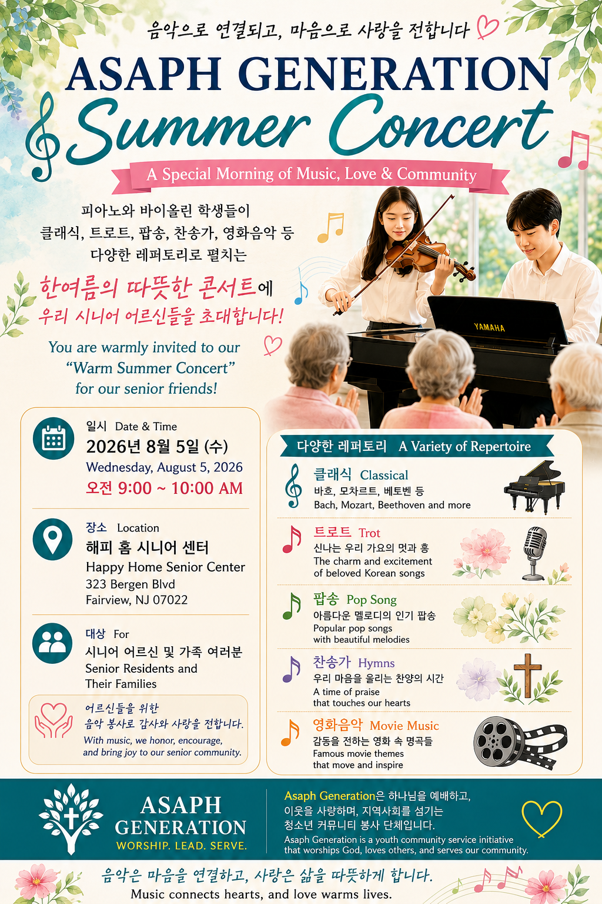
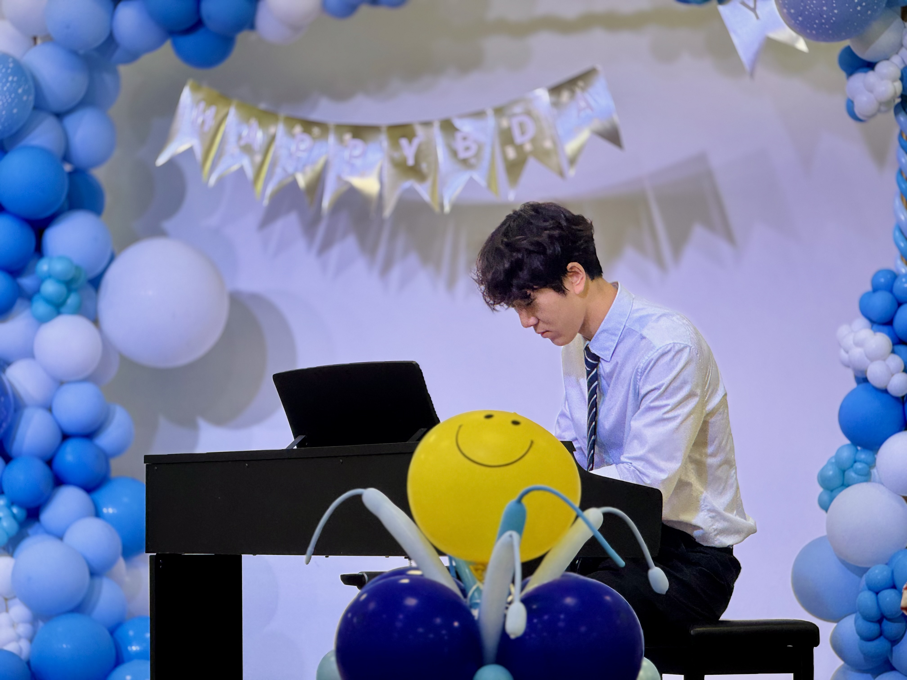

♪
Worship
We honor God by developing and sharing the musical gifts He has given us.
하나님께서 주신 음악적 재능으로 하나님을 예배합니다.
음악과 믿음, 사랑으로 시니어 공동체를 섬기는 기독교 청소년 공동체입니다.
Asaph Generation equips young people to worship God, lead with integrity, and share their musical gifts with senior communities.
“Whatever you did for one of the least of these brothers and sisters of mine, you did for me.”Matthew 25:40
Asaph Generation is a Christian youth service community dedicated to glorifying God by bringing music, encouragement, and meaningful fellowship to senior communities.
아삽 제너레이션은 청소년들이 음악과 섬김을 통해 시니어 공동체에 기쁨과 위로를 전하며, 하나님께 영광 돌리도록 세우는 기독교 청소년 봉사 공동체입니다.
In Scripture, Asaph was appointed to lead worship and music in service to God. His legacy inspires young people to use their gifts faithfully, humbly, and joyfully.
1 Chronicles 16 · 1 Chronicles 25 · Psalms of Asaph
믿음을 음악과 섬김으로 실천합니다.
We honor God by developing and sharing the musical gifts He has given us.
하나님께서 주신 음악적 재능으로 하나님을 예배합니다.
We form young leaders who serve with integrity, responsibility, and Christlike character.
정직과 책임, 그리스도의 성품으로 섬기는 청소년 리더를 세웁니다.
We bring joy, dignity, and companionship to seniors through music and personal connection.
음악과 교제를 통해 어르신들에게 기쁨과 존중, 따뜻한 동행을 전합니다.
Our student musicians visit senior centers and adult day-care communities to present thoughtful, engaging concerts featuring piano, violin, and other instruments.
Programs may include classical music, Korean trot, pop songs, hymns, and film music— selected to create joy, memory, connection, and encouragement.
학생 연주자들이 시니어센터를 찾아 피아노와 바이올린을 중심으로 클래식, 트로트, 팝송, 찬송가, 영화음악 등 다양한 레퍼토리를 들려드립니다.

한여름의 따뜻한 콘서트에 우리 시니어 어르신들을 초대합니다.
Asaph Generation is led by its founder, who works to build a generation that worships, leads, and serves through music and compassion.

Paul Ha is the founder and Student Executive Director of Asaph Generation. He founded the organization with a vision to help young people use their musical gifts to serve others through music, faith, and compassion.
As the organization's student leader, Paul oversees the development of Asaph Generation, coordinates musical outreach programs, organizes events, and works to build meaningful relationships with senior communities and community partners.
Through Asaph Generation, Paul hopes to encourage the next generation to worship God, lead with integrity, and serve others with the gifts they have been given.
We welcome student musicians, event volunteers, parents, photographers, and community partners who share our commitment to faith-filled service.
음악적 재능과 따뜻한 마음으로 어르신을 섬길 학생과 봉사자를 기다립니다.
Tell us your name, instrument or skill, school grade, and availability.
Email Us info@asaphgeneration.orgWe believe every person is created in the image of God and worthy of honor, compassion, and meaningful community. We serve not for recognition, but as an expression of gratitude for the grace we have received through Jesus Christ.
모든 사람은 하나님의 형상대로 지음 받았으며 존중과 사랑을 받을 가치가 있음을 믿습니다. 우리의 봉사는 인정받기 위한 것이 아니라 예수 그리스도 안에서 받은 은혜에 대한 감사의 표현입니다.